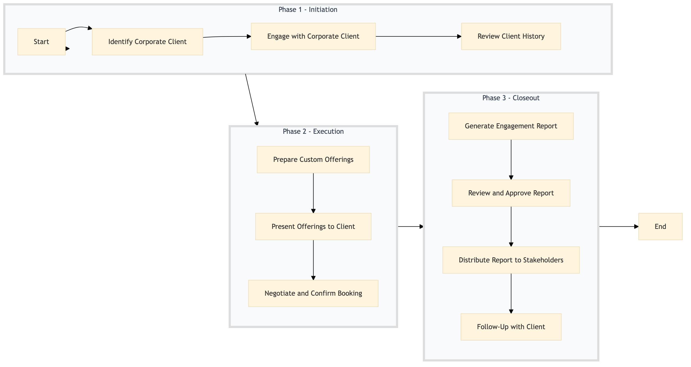

| Role | Steps |
|---|---|
| Revenue Manager | 1.1 1.3 3.1 3.2 |
| Sales Executive | 1.2 2.1 2.2 2.3 3.3 3.4 |
| Executive Housekeeper | 3.2 |
| Step | Name | Role | System | Input | Output | KPI | Dec? | Exc? | Pain Point / Risk |
|---|---|---|---|---|---|---|---|---|---|
| 1.1 | Identify Corporate Client | Revenue Manager | Oracle OPERA Cloud | Booking request details | Corporate client identification report | Identification within 5 minutes | Y | N | Accurate identification of corporate clients can be challenging due to similar booking patterns. |
| 1.2 | Engage with Corporate Client | Sales Executive | Oracle OPERA Cloud, Salesforce | Corporate client identification report | Engagement summary | Less than 30 minutes for engagement | Y | N | Lack of detailed client history can hinder effective engagement. |
| 1.3 | Review Client History | Revenue Manager | Oracle OPERA Cloud, Marriott Bonvoy CRM | Corporate client identification report | Client history analysis | Analysis completed within 10 minutes | Y | N | Access to comprehensive client data can be limited. |
| 2.1 | Prepare Custom Offerings | Sales Executive | Oracle OPERA Cloud, IDeaS G3 RMS | Client history analysis | Customized offer proposal | Proposal prepared within 1 hour | Y | N | Balancing client preferences with hotel capacity can be complex. |
| 2.2 | Present Offerings to Client | Sales Executive | Oracle OPERA Cloud, Salesforce | Customized offer proposal | Client feedback | Presentation completed within 30 minutes | Y | N | Clients may have multiple stakeholders influencing decisions. |
| 2.3 | Negotiate and Confirm Booking | Sales Executive | Oracle OPERA Cloud, SynXis CRS | Client feedback | Confirmed booking details | Booking confirmed within 2 hours | Y | N | Negotiating terms that satisfy both the hotel and client can be challenging. |
| 3.1 | Generate Engagement Report | Revenue Manager | Oracle OPERA Cloud, Microsoft Power BI | Confirmed booking details | Engagement report | Report generated within 24 hours | Y | N | Ensuring all relevant data is included in the report can be time-consuming. |
| 3.2 | Review and Approve Report | Executive Housekeeper | Oracle OPERA Cloud, Microsoft Power BI | Engagement report | Approved engagement report | Report approved within 1 hour | Y | N | Executive approval may require additional information or adjustments. |
| 3.3 | Distribute Report to Stakeholders | Revenue Manager | Oracle OPERA Cloud, Salesforce | Approved engagement report | Stakeholder notification | Notifications sent within 1 hour | Y | N | Ensuring all stakeholders receive the report in a timely manner. |
| 3.4 | Follow-Up with Client | Sales Executive | Oracle OPERA Cloud, Salesforce | Approved engagement report | Client follow-up summary | Follow-up completed within 2 days | Y | N | Maintaining consistent communication with clients post-booking. |
This process outlines how Marriott Bonvoy engages with corporate clients and reports on their interactions to enhance brand loyalty and sales.